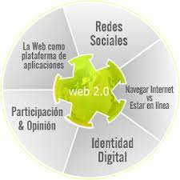
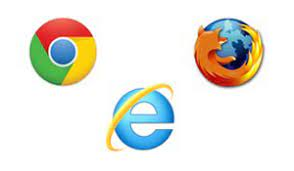

HTML
O que é a Internet? Como funciona a Web? O navegador Os servidores O que é uma URL? TAGs Tabela de TAGs que conheçoUma das características mais interessantes da Internet é a oportunidade que todos os usuários têm de disseminar informações. Tanto um vencedor do prêmio Nobel, quanto um estudante do primeiro ano de faculdade contam com os mesmos canais de distribuição para expressar suas idéias. Com o surgimento da World Wide Web, esse meio só foi enriquecido. O conteúdo da rede ficou mais atraente com a possibilidade de incorporar imagens e sons. Um novo sistema de localização de arquivos criou um ambiente em que cada informação tem um endereço único e pode ser encontrada por qualquer usuário da rede. Isso significa que na prática não existe nenhuma diferença entre as páginas de uma grande empresa na Web e as páginas que o leitor irá produzir. Ambas podem ser acessadas com a mesma facilidade. A diferença é uma só: a criatividade. Este texto tem o objetivo de fornecer as ferramentas básicas para exercitar a criatividade na Web. Será preciso aprender um pouco de HTML (HyperText Markup Language), a linguagem utilizada para criar as páginas. Você também encontrará uma porção de dicas, truques e exemplos.
1 - O que é a Internet?
Existem muitos termos que tentam definir a Internet. Super-estrada da informação, preferem os políticos. Rede de redes, insistem os cientistas. O certo é que cada um desses grupos prefere ver a rede segundo seus próprios interesses. Para os políticos, uma nova fronteira de construção e investimentos coletivos é um desafio. Já os cientistas, rigorosos em suas definições, enxergam a virtude da Internet em conectar computadores de qualquer tipo em todo o globo. As visões distintas da rede não param por aí. Há quem veja na Internet uma perigosa fonte de pornografia. As indústrias sonham com o dia em que poderão vender diretamente aos consumidores, sem nenhum intermediário. Empresas de comunicação esperam o meio que vai reunir rádio, TV e televisão em um mesmo sistema de produção. Pais de estudantes no exterior matam as saudades pelo monitor. E paqueras virtuais acontecem a toda hora em cada canto da rede. A Internet é tudo isso ao mesmo tempo. E com certeza muito mais. A rede é o que cada pessoa quiser que ela seja. Em toda a história da Internet foram os usuários que inventaram novos recursos e novas aplicações. é um terreno fértil para boas idéias. Isso tudo porque a Internet é uma invenção muito simples. Nada mais é do que uma forma fácil e barata de fazer com que computadores distantes possam se comunicar. A partir daí, a revolução está nas mãos das pessoas.
Cada usuário recebe uma identificação única, conhecida como endereço. Com esse endereço, ele pode se comunicar, enviando mensagens para outras pessoas. é o que se chama de correio eletrônico. Graças ao esforço de instituições como Universidades e empresas ligadas à pesquisa, dispostas a investir dinheiro e pessoal para criar e manter os pontos principais da rede ; os servidores (computadores de alto desempenho) ; é possível conseguir programas de graça e consultar bancos de dados públicos. Hoje, com o sucesso da Internet, toda empresa se vê na obrigação de colocar a cara na rede. Os serviços se multiplicam. Os bancos planejam oferecer todas as suas operações pelo computador. Notícias são distribuídas imediatamente. Pizzarias aceitam pedidos. Livrarias e lojas de discos vendem seus produtos. No entanto, boa parte do material da rede é produzido por indivíduos querendo expressar ao mundo suas preferências. Um usuário reúne tudo que tinha sobre Jornada nas Estrelas e coloca na Internet. Outro, com objetivos mais práticos, escreve um currículo e espera que seus talentos sejam descobertos. Todo mundo que um dia sentiu vontade de compartilhar suas façanhas agora pode fazer isso. O tal terreno fértil da Internet tem um nome. Se chama World Wide Web, ou apenas Web.
2 - Como Funciona a Web?
A Web funciona basicamente com dois tipos de programas: os clientes e os servidores. O cliente é o programa utilizado pelos usuários para ver as páginas, enquanto os servidores ficam responsáveis por armazenar e permitir o acesso ao conteúdo da rede. Neste texto chamamos o programa cliente de navegador (em inglês, browser). O que o navegador faz é requisitar um arquivo para um servidor. Se a informação pedida realmente estiver armazenada naquele servidor, o pedido será enviado de volta e mostrado na tela do navegador.
A informação na Web é organizada na forma de páginas, que podem conter texto, imagens, sons e, mais recentemente, pequenos programas. Além disso, as páginas da Web podem ser ligadas umas com as outras, formando o que se chama de um conjunto de hipertextos. Assim é possível, por exemplo, que um trabalho de faculdade faça referência direta a um texto que serviu de base para o estudo. O leitor interessado na fonte de pesquisa pode saltar imediatamente para o texto original. Dessa forma, qualquer documento pode levar a um outro texto que também esteja disponível na rede. A possibilidade de criar uma “malha” de informação em torno do planeta deu origem ao nome World Wide Web, que significa “teia de alcance mundial”.
3 - O navegador
Como foi dito há pouco, os usuários circulam por essa teia com um programa chamado navegador. Esse programa envia pedidos de páginas pela rede e as apresenta na tela do usuário. Existem vários navegadores para todos os tipos de computadores. Os mais conhecidos são o Netscape Navigator, o Microsoft Internet Explorer e o NCSA Mosaic.
4 - Os servidores
Os pedidos dos navegadores são atendidos por uma combinação de computadores e programas que formam os servidores. Esses computadores e programas armazenam as páginas e podem exercer algum tipo de controle sobre quais usuários podem acessá-las. São máquinas potentes instaladas em universidades, empresas e órgãos do governo conectadas permanentemente à Internet. Também é possível montar um servidor de Web em casa, com um computador pessoal. Existe programas de servidores de Web tanto para Mac como para PC. Apesar de poderem ser instalados em praticamente todos os tipos de computadores, os servidores devem estar conectados 24 horas por dia na rede para que os usuários possam requisitar as páginas a qualquer momento. A melhor solução para montar um conjunto de páginas é procurar uma empresa que aluga espaço em um servidor Web.
5 - O que é uma URL?
A Web permitiu que cada documento na rede tenha um endereço único, que indica o nome do arquivo, diretório, nome do servidor e o método pelo qual ele deve ser requisitado. Esse endereço foi chamado de URL (Uniform Resource Locator, numa tradução literal, localizador uniforme de recursos). Uma URL tem a seguinte estrutura:http://www.seed.net.tw/~milkylin/htmleasy.html
Onde: http:// é o método pelo qual ocorrerá a transação entre cliente e servidor. HTTP (HyperText Transfer Protocol, ou protocolo de transferência de arquivos de hipertexto) é o método utilizado para transportar páginas de Web pela rede. Outros métodos comuns são: ftp:// (para transferir arquivos), news:// (grupos de discussão) e mailto:// (para enviar correio eletrônico). www.seed.net.tw é o nome do servidor onde está armazenado o arquivo. Nem sempre o nome de um servidor de Web inicia por WWW. Existem servidores de Web com nomes como cs.dal.ca. /~milkylin/ é o diretório onde está o arquivo. às vezes uma URL indica apenas o diretório (ou o servidor). Nesse caso, o servidor se encarrega de procurar e enviar o arquivo adequado. htmleasy.html é o nome do arquivo. A extensão .html indica que se trata de uma página Web. Uma URL pode indicar outras extensões. Quando o navegador recebe um arquivo com a extensão .txt, o arquivo é tratado como um texto comum. Em outros casos, como nas extensões .zip (arquivo comprimido) e .exe (um programa), o navegador abre uma janela perguntando ao usuário o que fazer com o arquivo. Esse endereço único de um documento pode ser utilizado pelo usuário para localizar um arquivo com o navegador. Nesse caso, o usuário deve preencher com o endereço uma janela do navegador conhecida como Location, Open ou Address e teclar Enter. A URL será enviada até o servidor, que tentará localizar o arquivo e enviá-lo para o usuário. Caso o arquivo não esteja disponível no servidor, o usuário receberá uma mensagem de erro. As URLs também são colocadas dentro de páginas de WWW para fazer referência a outras informações disponíveis na Internet. Nesse caso, determinados itens (trechos de texto ou imagens) da página, conhecidos como links, podem ser utilizados pelos usuários para saltar de um lugar a outro na rede. Os links podem conter ligação com qualquer tipo de arquivo. Essa ligação entre os documentos é o que se chama de hipertexto.
6 - TAGs
Todas as marcações são realizadas pelas tags que em geral são estruturas de linguagem de marcação que contém instruções. Os navegadores interpretam essas instruções e a partir disso renderizam uma pagina. A forma mais comum de utilização das tags, são como delimitadores de estilo ou de conteúdo, ou seja ela agrupa os conteúdos de acordo com o tipo, forma e formatações e com isso outras linguagem como por exemplo CSS podem aplicar estilizações a este conteúdo. As tags também são responsáveis por criar elementos nas paginas web com a função de organizar, identificar e limitar o conteúdo de uma pagina. Cabe então ao Browser reconhecer esses elementos, e renderizá-las apresentando seu conteúdo aos usuários.
7 - Tabela de TAGs que conheço
| Tags | O que faz | ||||
|---|---|---|---|---|---|
| h1 | para colocar titulo | ||||
| h2 | para colocar subtitulo | ||||
| p | usa para abir um paragrafo | ||||
| table | para fazer uma tabela | ||||
| id | para atribuir um id para uma tag | ||||